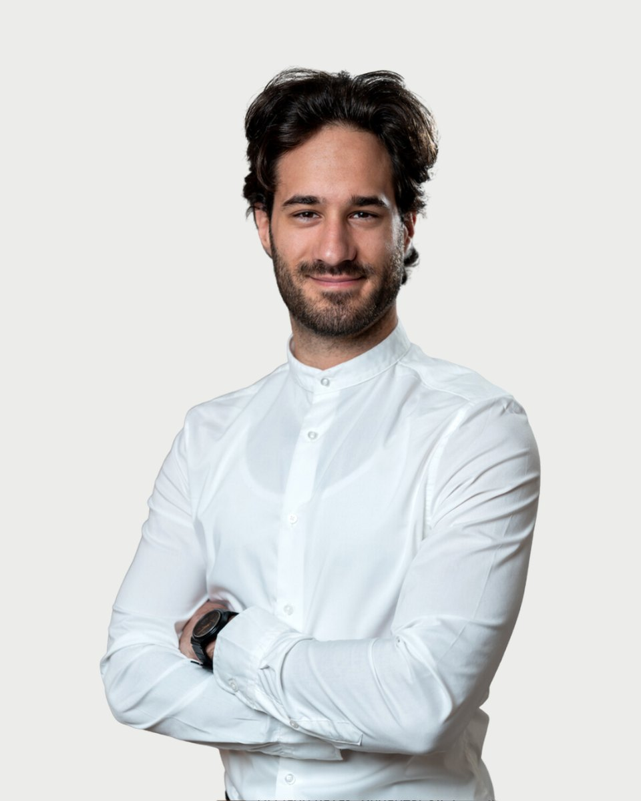

Regiszter 32 · Pszichológus
Szelényi Bence
Amiben segítek
Szelényi Bence saját megfogalmazásában. Ha a listában nem találja a saját helyzetét, az első beszélgetésen ezt is megbeszélik.
- Ha úgy érzi nem tud egyedül megbirkózni egy problémával szeretném, ha tudná, nem lesz mindig így, és nincs egyedül. A nehézségek nagy része a megfelelő támogató közegben lebonthatóak kisebb és kevésbé ijesztő egységekre, melyek a személy egyedi erőforrásaival legyűrhetővé válnak. Ezen erőforrások meglelésében támogatom és segítem Önt
- Amikor stresszesek vagyunk úgy érezzük egy vagy akár több megoldandó helyzettel nem tudunk mit kezdeni, elakadtunk. Ez pedig félelemmel vagy szorongással tölthet el bennünket. Gyakran ez a szorongás rávetül más életterületekre is, és egyre több helyzetben érezzük a stressz szorító jelenlétét. Ekkor az önismeret segítségével megvizsgálhatjuk a stresszt kiváltó eredeti okot, és rájöhetünk, hogy csak egy adott szituáció szorongató számunkra. A félelmünk csökken, az erőforrásaink gyarapításával és felhasználásával pedig hatékonyan kezelhetjük és megszüntethetjük a stresszt
- A társas kapcsolataink áthatják az életünket. Egyes megközelítések szerint az identitásunk és a személyiségünk is elválaszthatatlan a körülöttünk élőktől. Összefonódik. Nem csoda hát, ha a problémáink egy része a kapcsolatainkból fakadnak. Ekkor segíthet igazán egy külső támogató fél, aki az Ön kapcsolati hálóján belül csakis Önre fókuszál, mindezt pedig empátiával és elfogadással teszi. Érdeklődve várom, hogy megismerhessem!
- Az önismeret a fejlődés alapja. Az önismeret lehetővé teszi, hogy megértsük a múltat, elfogadjuk a jelent és aktívan tegyünk egy szebb jövőért. Azonban az önismeret nehéz, pont a benne rejlő lehetőségek miatt. Ki ne mondta volna magában, hogy majd később foglalkozom magammal? Majd, ha lesz rá energiám. Most túl megerőltető. Ezek teljesen érthető mondatok, sőt arról árulkodnak, hogy az adott probléma mennyire fontos számunkra. Ha valamilyen lelki nehézséggel makacs módon nem szeretnénk foglalkozni, onnan tudhatjuk, hogy mégis érdemes. Az önismeret lehetőséget kínál a viselkedésünk mélyebb megismerésére, így segítve minket a problémáink hatékonyabb megoldásában
- Önértékelési problémák, önbizalomhiány
- Szorongás/szorongásos problémák
- Párkapcsolati és családi problémák
- Életvezetési nehézségek
- Relaxáció
- Kommunikáció fejlesztés
- Sport
- Teljesítmény és motiváció kapcsolata
Bemutatkozás
Szelényi Bence saját szavaival. Egy alkalom díja 15-20 ezer forint. A díjakról
Megnyugvással tölt el, hogy felkeresett bennünket, ugyanis az első és egyik legnehezebb lépés a gyógyulás útján maga a probléma felismerése.
Empátiával gondolok Önre ennek a kihívásokkal teli folyamatnak a kezdetén. Ez az út azonban lehetőségekkel teli élmény is, amely következtében felfedezheti saját értékeit és ellenállóbbá válhat az élet nehézségeivel szemben. Ez a folyamat gyakran olyan, mint egy titkos szoba: ameddig nem tudjuk, mi lakozik bent, addig félelem tölt el bennünket, hiszen bármi lehet az ajtó mögött. Mindennel pedig képtelenség megbirkózni. Azonban, ha úgy döntünk, önként bemegyünk az ajtón, kiderülhet, hogy csak néhány dolog lakik bent, amikkel nem is olyan nehéz bánni, mint azt gondoltuk.
Én magam szenvedélyesen szeretem a pszichológiát és motivált vagyok ismereteim bővítésére, annak érdekében, hogy minél jobban és igazán személyre szabottan tudjak segíteni Önnek.
A közös munka során megtapasztalhatja a feltétel nélküli elfogadást, amely gyógyítóan hathat Önmaga elfogadására. Maximálisan törekszem az empátiára, hogy a felületesség helyett igazán megismerjem Önt, és mélyen megértsem az Ön nehézségét. Mindezt pedig őszinte érdeklődéssel teszem, hiszen minden ember egyedi.
Köszönöm a belém vetett bizalmát! Várom, hogy közösen benyissunk abba a titkos, de lehetőségekkel teli szobába!
A szenvedés megszűnik szenvedésnek lenni abban a pillanatban, ha értelmet nyer." Viktor E. Frankl
Bármidet, amid az életben van, elvehetik tőled, kivéve egyet: a választási szabadságodat, hogy hogyan reagálsz egy helyzetre. Ez határozza meg a megélt életünk minőségét; nem az, hogy gazdagok vagy szegények, híresek, avagy ismeretlenek, egészségesek vagy betegek voltunk-e. Az határozza meg életminőségünket, hogy hogyan viszonyulunk ezekhez a dolgokhoz, milyen jelentéssel ruházzuk fel őket, milyen viselkedésmóddal reagálunk rájuk, milyen elmeállapotba kerülünk miattuk."
Viktor E.Frankl
Hitvallás
Képzés és szakmai út
28 tétel. A képzések és a szupervízió az akkreditált szakképzőhely rendjében folynak. Mit jelent ez Önnek
Iskolai végzettség
Szakmai tapasztalat
Önismeret
Tanítómesterek
- Dr. TringerLászló: Orvos, Pszichiáter.
- Akibevezetett a Rogersi személyközpontú pszichológiába és megmutatta mennyit ér az emberségesség és a feltétel nélküli elfogadás.
- PintérGábor: Klinikai Szakpszichológus, Pszichoterapeuta
- Akiegyrészt megmutatta, mennyire fontos az önismeret a segítő szakmákban, másrészt erősítette bennem a bátorságot.
- Dr. SzőnyiMagda: pszichológus, relaxációs gyakorlatvezető, szimbólumterapeuta
- Akimegmutatta számomra, hogy a terápiában nem a "miért?" kérdés a lényeg, hanem a "mit jelent?". Nem lényeg, hogy sikerül-e egy gyakorlat, hanem az a lényeg, hogy ez a személyt milyen érzésekkel tölti el? Az egyéni élmény a kulcs.
Rólam mondták
Kliensek visszajelzései, a hozzájárulásukkal, névtelenül.
Hónapok óta tartó szorongásaimmal kapcsolatban kerestem fel Bencét, aki a kezdetektől fogva jól átlátja és átérzi a helyzetemet. A vele való munkát közvetlennek érzem, könnyen meg tudom vele osztani a gondolataimat és a problémáimat, amiket mindig türelmesen meghallgat. Segítségével és a módszereivel egyértelmű előrelépést tapasztaltam az állapotomban és az általános hangulatom is sokkal pozitívabb, mint mielőtt a segítségét kértem.
Bencével az első alkalom során átbeszéltük milyen célokat tűzünk amiken dolgozni szeretnék. Nagyon szerettem hozzá járni, néha azon kaptam magam, hogy éppen, hogy csak elkezdődött az alkalom már vége is volt olyan jól telt az idő. A megteremtett légkörben mindig úgy éreztem, hogy bátran megoszthatom minden gondolatom.Úgy érzem nagyon sokat fejlődtem a közös munka során, ha a későbbiekben ismét szakemberhez szeretnék fordulni mindenképpen őt fogom először megkeresni.
Hónapok óta tartó szorongásaimmal kapcsolatban kerestem fel Bencét, aki a kezdetektől fogva jól átlátja és átérzi a helyzetemet. A vele való munkát közvetlennek érzem, könnyen meg tudom vele osztani a gondolataimat és a problémáimat, amiket mindig türelmesen meghallgat. Segítségével és a módszereivel egyértelmű előrelépést tapasztaltam az állapotomban és az általános hangulatom is sokkal pozitívabb, mint mielőtt a segítségét kértem. " Úgy érzem nagyon sokat fejlődtem a közös munka során, ha a későbbiekben ismét szakemberhez szeretnék fordulni mindenképpen őt fogom először megkeresni.
Regiszter 32
Időpont Szelényi Bencenél
Az ügyfélszolgálat hétköznap 9 és 15 óra között egyeztet. Ha bizonytalan, hogy Ön kihez tartozik, azt is megbeszélik, és ha kell, más kollégát javasolnak.